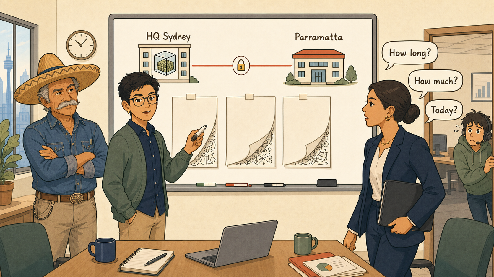
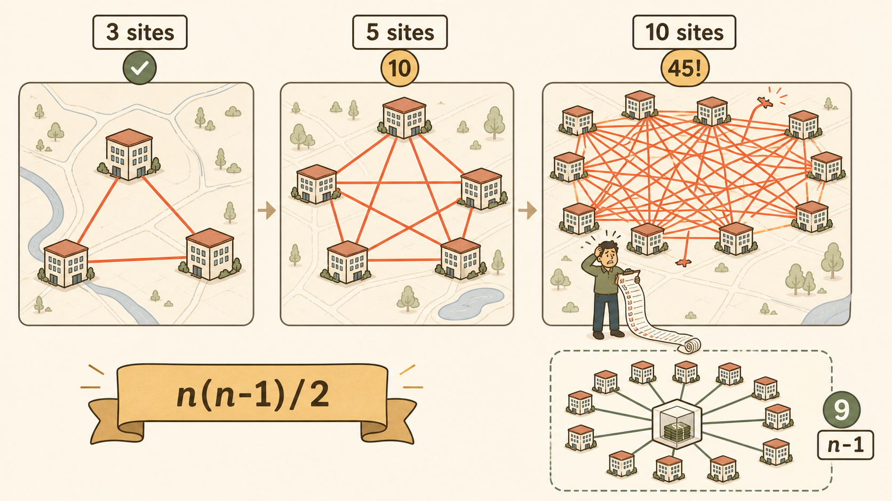
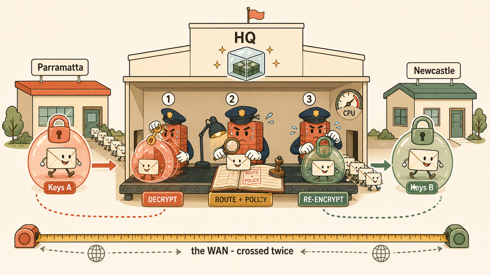
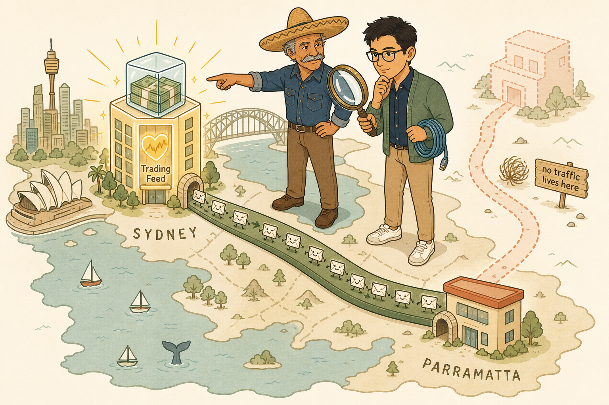
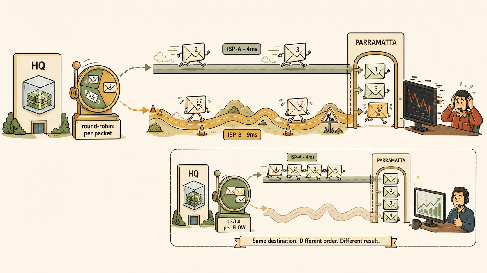
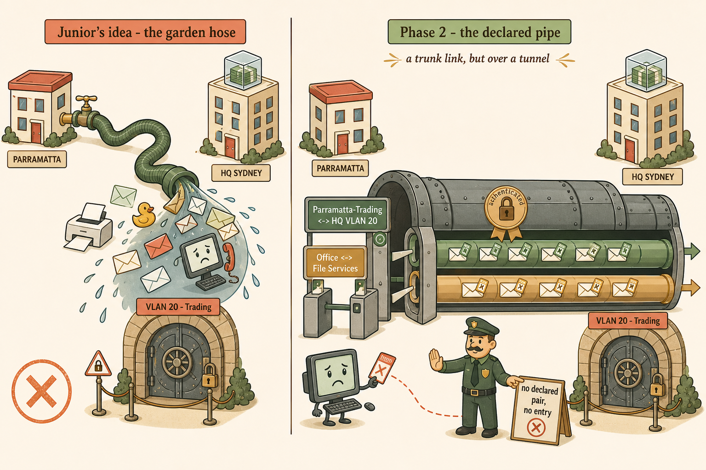
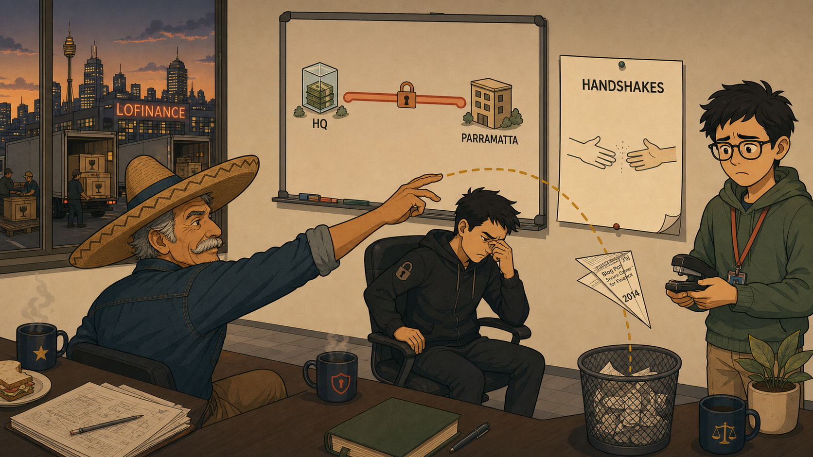

Copy each Image Generation Prompt into an AI image generator. Consistent style across all: flat, minimalistic but highly detailed vector illustration; cream/warm off-white background; coral accents, muted gold highlights, sage greens, soft brown outlines; clean bold line work; no gradients, no photorealism, no glossy 3D; professional but storybook-like. LoFinance logo = stacks of money frozen inside an ice cube. Señor wears a sombrero.
1 · The Whiteboard Moment
Purpose: anchor the session's opening scene and the design-first principle — "draw it before you cable it."

[ IMAGE PLACEHOLDER — 16:9 — "The Whiteboard Moment" ]
Image Generation Prompt
Flat minimalistic vector illustration, storybook-professional style, cream off-white background, coral and muted gold accents, sage green highlights, soft brown outlines, no gradients, no photorealism. Interior of a modern finance-office meeting room. Centre: a young intermediate network engineer (confident but focused, holding a whiteboard marker) standing at a large whiteboard. On the whiteboard: two simple labelled buildings — "HQ Sydney" on the left with a small ice-cube-with-frozen-money logo, "Parramatta" on the right — connected by a single bold coral line labelled with a small padlock icon. To one side, three sheets of paper taped to the board are turned face-down, one corner curling to reveal scribbled chaos beneath. Left of frame: an eccentric older senior engineer wearing a wide sombrero, arms folded, calm approving expression. Right of frame: a professional COO woman (Penny) mid-stride, three speech-bubble fragments overlapping in one breath: "How long?" "How much?" "Today?". In the background a nervous junior engineer with a headset peeks around the doorframe. Composition: eye-level, slightly wide angle, whiteboard as the visual centre of gravity. Lighting flat and warm. Mood: the calm before a well-made decision. Must NOT include: dense technical labels, vendor logos, 3D rendering. Learning purpose: the design is drawn before anything is cabled — the pattern is chosen at site two.
2 · The Mesh Explosion
Purpose: make n(n−1)/2 unforgettable — the quadratic tangle vs the tidy star.

[ IMAGE PLACEHOLDER — 16:9 — "The Mesh Explosion" ]
Image Generation Prompt
Flat minimalistic vector illustration, cream background, soft brown outlines, no gradients. A three-panel left-to-right progression, each panel a small city map viewed slightly from above. Panel 1 labelled "3 sites": three small office buildings connected by 3 neat coral tunnel-lines, tidy and calm, a small sage-green tick above. Panel 2 labelled "5 sites": five buildings connected by 10 coral lines, noticeably busier, a small amber "10" badge. Panel 3 labelled "10 sites": ten buildings buried under a chaotic cat's-cradle tangle of 45 crossing coral lines rendered like knotted string, one line snapping, a tiny overwhelmed engineer figure at the bottom holding a clipboard with a long scrolling checklist that spills onto the floor; a bold amber "45!" badge above. Beneath all three panels, a single elegant muted-gold banner with the formula "n(n−1)/2" in clean typography. In the bottom-right corner, a small inset showing the alternative: the same 10 buildings arranged as a tidy star around one central HQ building (ice-cube-money logo), just 9 calm sage-green lines, labelled "n−1". Mood: escalating comic chaos resolved by elegant order. Must NOT include: real vendor stencils, photorealism, dense IP labels. Learning purpose: mesh tunnel count grows quadratically; hub-and-spoke grows linearly.
3 · The Hub Tax — Packet Journey
Purpose: cement the decrypt/re-encrypt burden and double-WAN latency of spoke-to-spoke traffic.

[ IMAGE PLACEHOLDER — 16:9 — "The Hub Tax" ]
Image Generation Prompt
Flat minimalistic vector illustration, cream background, coral/gold/sage palette, soft brown outlines, storybook-educational style. A packet's journey shown as a small anthropomorphic envelope character (friendly face, tiny legs) travelling left to right across three stations. Left station: a small branch office labelled "Parramatta"; the envelope is sealed inside a translucent coral padlock-bubble labelled "Keys A". Centre station, dominating the frame: the HQ building (ice-cube-frozen-money logo) drawn as a busy customs checkpoint — inside, a sweating firewall character wearing a customs-officer cap performs three sequential actions shown as mini-vignettes along a conveyor belt: (1) unlocking and opening the coral bubble ("DECRYPT"), (2) inspecting the envelope under a desk lamp with a stamped policy ledger ("ROUTE + POLICY"), (3) resealing it inside a NEW sage-green padlock-bubble labelled "Keys B" ("RE-ENCRYPT"). A queue of many more envelope characters waits behind, stretching out the door; the firewall's CPU gauge on the wall reads near-red. Right station: a second branch labelled "Newcastle" receiving the green bubble. Beneath the whole scene, a muted-gold measuring tape spans both WAN hops labelled "the WAN — crossed twice". Mood: gently comic overwork. Must NOT include: shared keys between stations, photorealism. Learning purpose: each tunnel has its own keys, so the hub decrypts and re-encrypts all spoke-to-spoke traffic — bottleneck and single point of failure.
4 · Where Does the Traffic Live?
Purpose: the session's core design criterion — the topology's weakness must land where there is no traffic.

[ IMAGE PLACEHOLDER — 3:2 — "Where Does the Traffic Live?" ]
Image Generation Prompt
Flat minimalistic vector illustration, cream background, coral/gold/sage palette, clean bold line work, no gradients. A stylised map of Sydney drawn like a warm storybook board-game. Centre-left: the HQ building, tall and glowing softly gold, with the ice-cube-frozen-money logo and a radiant heart-like icon inside labelled "Trading Feed" — clearly the treasure of the map. Lower-right: the smaller Parramatta branch building. Between them: one thick, confident sage-green tunnel-road carrying a steady caravan of tiny envelope characters in both directions — this road is wide, smooth, and busy. Faintly sketched in pale dotted coral, almost ghost-like: a hypothetical road between Parramatta and a faded, semi-transparent "future branch" building in the corner — this ghost road is empty, with a small tumbleweed and a sign reading "no traffic lives here". Standing on the map like a giant, the intermediate engineer studies the roads through a magnifying glass, while the sombrero-wearing senior engineer points at the treasure-heart in HQ rather than at any road. Mood: calm insight, treasure-map charm. Must NOT include: dense labels, more than the described roads, photorealism. Learning purpose: LoFinance's critical traffic is branch↔HQ; hub-and-spoke's spoke-to-spoke weakness lands on a road nobody uses.
5 · The Reordered Feed — Two Roads, One Race
Purpose: lock in the per-packet round-robin reordering trap on unequal-latency links.

[ IMAGE PLACEHOLDER — 16:9 — "Two Roads, One Race" ]
Image Generation Prompt
Flat minimalistic vector illustration, cream background, coral/gold/sage palette, soft brown outlines, gently comic educational style. Two parallel roads run left to right between "HQ" (left, ice-cube-money logo) and "Parramatta" (right). Top road: short, straight, smooth, labelled "ISP-A · 4ms", sage green. Bottom road: longer, winding through hills with roadworks cones, labelled "ISP-B · 9ms", amber. Four numbered envelope characters (1,2,3,4) have been dealt alternately onto the roads by a roulette-style dispenser at HQ labelled "round-robin: per packet": envelopes 1 and 3 sprint along the fast top road, envelopes 2 and 4 trudge along the slow bottom road. At the Parramatta end, an arrivals gate shows them arriving out of order — 1, 3, then 2 squeezing in late and flustered — while a trading-terminal screen beside the gate displays a glitching, jagged price chart and a distressed trader clutching his headset. In a small inset panel bottom-right, the fix: the same dispenser re-labelled "L3/L4: per FLOW", now sending an entire chain of linked envelopes down one single road together, arriving in perfect order, chart smooth, trader relieved. Mood: a fable about a race with a moral. Must NOT include: photorealism, more than two roads. Learning purpose: per-packet balancing over unequal-latency paths reorders packets; per-flow hashing or active/backup keeps a flow intact.
6 · The Declared Pipe — Trunk Over a Tunnel
Purpose: immortalise the student's own analogy and refute Junior's garden hose.

[ IMAGE PLACEHOLDER — 3:2 — "The Declared Pipe" ]
Image Generation Prompt
Flat minimalistic vector illustration, cream background, coral/gold/sage palette, clean bold line work, split-panel composition. LEFT PANEL, labelled "Junior's idea — the garden hose" in hand-drawn lettering: a cartoon garden hose connecting two buildings, with everything imaginable pouring through it unfiltered — envelopes, a printer, a rubber duck, a confused receptionist's desktop PC — all tumbling out the far end into a restricted vault door marked "VLAN 20 · Trading"; a small amber X stamp over the whole panel. RIGHT PANEL, labelled "Phase 2 — the declared pipe": one large armoured conduit (the phase 1 channel, drawn like a secure trunk cable with a gold seal reading "authenticated") between the same two buildings, but inside it run exactly TWO neatly separated inner lanes, each a distinct colour with a ticket-gate at the entrance: lane one, sage green, gate sign "Parramatta-Trading ↔ HQ VLAN 20", carrying orderly envelopes with green boarding passes; lane two, muted gold, gate sign "Office ↔ File Services". Outside the conduit entrance, the receptionist's PC character holds a ticket the gate rejects — a polite guard points to a board reading "no declared pair, no entry" — the PC never enters the pipe at all. Above the right panel, small elegant caption: "a trunk link, but over a tunnel". Mood: order vs chaos, gently funny. Must NOT include: photorealism, more than two inner lanes. Learning purpose: one phase 1 carries multiple phase 2 selectors; undeclared pairs never enter the tunnel.
7 · Cliffhanger — The Paper Aeroplane
Purpose: teaser anchor for Session 11 without teaching it.

[ IMAGE PLACEHOLDER — 16:9 — "The Paper Aeroplane" ]
Image Generation Prompt
Flat minimalistic vector illustration, cream background, coral/gold/sage palette, cinematic teaser mood, slightly lower lighting than the other images (still flat colour, just deeper tones). The LoFinance office at dusk. Foreground: Señor, sombrero silhouetted, mid-throw — a crisply folded paper aeroplane sails in a graceful gold-dotted arc toward a wastepaper bin; the aeroplane's visible wing shows a fragment of printed blog text and the year "2014". Junior watches with a crushed expression, still holding the stapler. In the mid-ground, a security-minded engineer in a plain dark jacket (Cipher) is lowering himself very slowly into a chair, one hand pinching the bridge of his nose. On the wall behind them, the newly drawn two-site topology (HQ ice-cube logo, Parramatta, one coral tunnel line) — and pinned beside it, a fresh blank sheet titled only "HANDSHAKES", with two stylised hands about to meet, drawn but not yet touching. Through the window, delivery trucks arrive carrying crates stamped with a fragile-glass icon. Mood: comic timing meets anticipation; the handshake not yet made. Must NOT include: any IKE technical detail, message diagrams, photorealism. Learning purpose: cliffhanger — the tunnel is designed, but the two firewalls haven't yet learned to greet each other properly.